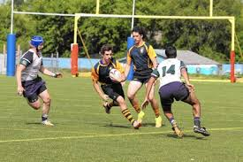

Youth Rugby Coaching: Don't Skip this in Practice!

The title of this page is obviously there to draw you in. As you many not like the answer
, but one of the most overlooked areas in youth rugby coaching, is DEFENCE.
You know Americans will scream it in basketball games. In my experience, youth especially, teams
do not focus on this area enough and in enough detail!
Tackling
Positioning in different scenarios
Working as a team in defence
Tactics, roles, etc.
In all honesty the list can go and on... So, start with the above and go from there